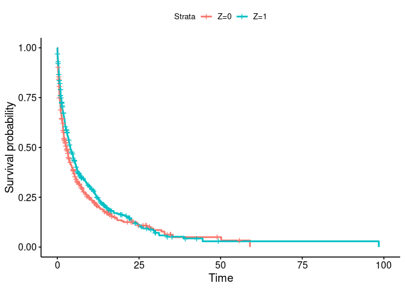
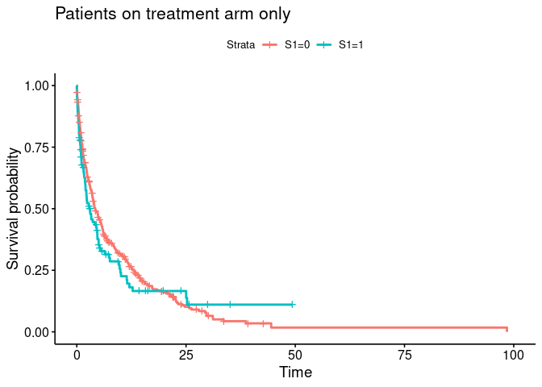

knitr::opts_chunk$set(echo = FALSE, cache = TRUE)
# --------------------------------------------------------------
# Packages
# --------------------------------------------------------------
packages <- c("data.table", "ggplot2", "survival", "survminer",
"mvtnorm", "knitr", "reporttools")
for (i in 1:length(packages)){library(packages[i], character.only = TRUE)}
# function to prettify output
prettyCox <- function(mod, dig.coef = 2, dig.p = 1){
tab1 <- data.frame(cbind(summary(mod)$conf.int), summary(mod)$coefficients)
tab1 <- data.frame(cbind(apply(tab1[, c(5, 1)], 1:2, disp,
dig.coef), displayCI(as.matrix(tab1[, c(3, 4)]), digit = dig.coef),
formatPval(tab1[, 9], dig.p)))
tab1 <- data.frame(cbind(rownames(summary(mod)$conf.int), tab1))
colnames(tab1) <- c("Variable", "Coefficient", "HR = exp(coef)",
"95\\% CI", "$p$-value")
kable(tab1, row.names = FALSE)
}Code examples for methodologies presented
1 Purpose
This document accompanies Bjoern Bornkamp et al. (2021). The preprint is B. Bornkamp et al. (2020) and the accompanying github repository is available here. It provides an implementation of different analysis methods for principal stratum estimands motivated by the principal ignorability assumption. In addition an idea for a sensitivity analysis is proposed. Wang et al. (2023) provide further discussion of a sensitivity analysis for the principal ignorability assumption via multiple imputation.
In this document we focus on a time-to-event endpoint as they are currently mostly performed (i.e., based on the Cox model). Some of the analyses presented here would be easier to perform and/or interpret when using linear and collapsible summary measures like the difference in restricted mean survival time.
2 Setup
3 Generating example dataset
In this section we generate a hypothetical example dataset to analyse. The dataset is loosely motivated by Schmid et al. (2018), which reports results of a Phase 3 trial comparing the monoclonal antibody Atezolizumab versus placebo (both on top of chemotherapy) in terms of progression free survival (PFS). Survival functions of the two treatment arms are loosely motivated by Figure 2A in that paper. We assume that for some patients on the treatment arm anti-drug-antibodies (ADAs) were induced by the treatment. Interest then focuses on how presence of ADAs might impact the treatment effect versus placebo. Note that we assume here that the ADA status is available instantaneously after treatment start for every patient and before any potential PFS event. There might be events before the intercurrent event occurs which might make observation of the intercurrent event status impossible. Please consult the paper on how to perform estimation in these more challenging situations.
This section can be skipped in case there is no interest in a detailed description on how the data were generated.
We assume in this simulated example that the principal ignorability assumption is fulfilled and that there is one main confounder, which is a prognostic score \(X\) with 4 equally likely categories (\(X = 1, 2, 3, 4\)). \(X\) has a strong impact on the potential PFS outcomes \(Y(0)\) and \(Y(1)\) as well as occurence of ADA on the treatment group \(S(1)\). For all patients we simulate all potential outcomes, \(Y(0)\), \(Y(1)\) and \(S(1)\). Note that \(S(0) \equiv 0\), i.e. ADA cannot occurr on the control arm.
3.1 Assess “true” effects - population dataset
In a first step and as a benchmark, we generate the “true” treatment effect for patients that are ADA+ in the treatment arm, i.e. those with \(S(1) = 1\). To this end, we simulate from a very large number of patients, the “population”.
set.seed(123)
## define model quantities
N <- 1e6 # large sample
X_p <- 4 # number of categories of X
a <- 0.5 # governs P(S(1) = 1)
## generation of Y(1)
y1_a <- -1.2
y1_b <- 0.25
y1_c <- -0.5
## generation of Y(0)
y0_a <- -0.8
y0_b <- -0.5
# true proportion of censored observations
prob_cens <- 0.2
## "true" treatment effect for patients with S(1) = 1
## for a large dataset assuming we could measure S1 for all patients
## simulate covariate X (low X -> high disease severity)
X <- sample(1:X_p, N, prob = rep(1 / X_p, X_p), replace = TRUE)
## permute treatment assignment
Z <- sample(c(rep(0, N / 2), rep(1, N / 2)))
## generate S(1) for all patients
## with a = 0.5 --> P(S(1) = 1) ~= 0.24
S1_prob <- 1 / (1 + exp(a * X))
## S1 more likely to occur for high disease severity
S1 <- rbinom(N, 1, S1_prob)
## generate Y(1) for all patients, depending on Z, X and S(1)
Y1 <- rexp(N, exp(y1_a + y1_b * S1 + y1_c * X))
Y0 <- rexp(N, exp(y0_a + y0_b * X))
Y <- Y1 * Z + Y0 * (1 - Z)
## add uniform random censoring
event <- sample(0:1, N, prob = c(prob_cens, 1- prob_cens), replace = TRUE)
Y[!as.logical(event)] <- runif(N - sum(event), 0, Y[!as.logical(event)])
adat <- data.table(Y, Z, X, S1, event)
## display model coefficients
truth_S1 <- coxph(Surv(Y, event) ~ Z + X, data = adat[S1 == 1])
truth_S0 <- coxph(Surv(Y, event) ~ Z + X, data = adat[S1 == 0])
prettyCox(truth_S1)| Variable | Coefficient | HR = exp(coef) | 95% CI | \(p\)-value |
|---|---|---|---|---|
| Z | -0.16 | 0.85 | [0.85, 0.86] | < 0.0001 |
| X | -0.52 | 0.59 | [0.59, 0.60] | < 0.0001 |
prettyCox(truth_S0)| Variable | Coefficient | HR = exp(coef) | 95% CI | \(p\)-value |
|---|---|---|---|---|
| Z | -0.41 | 0.66 | [0.66, 0.67] | < 0.0001 |
| X | -0.52 | 0.60 | [0.59, 0.60] | < 0.0001 |
The results from the model coefficients are as expected: We see an overall treatment effect that is attenuated in ADA+ patients.
3.2 Clinical trial dataset
Now we generate a clinical trial dataset from that same population, using the same approach as above.
set.seed(123)
## number of patients
n <- 450
N <- 2 * n
## simulate covariate X (low X -> high disease severity)
X <- sample(1:X_p, N, prob = rep(1 / X_p, X_p), replace = TRUE)
## permute treatment assignment
Z <- sample(c(rep(0, N / 2), rep(1, N / 2)))
## generate S(1) for all patients
## with a = 0.5 --> P(S(1) = 1) ~= 0.24
S1_prob <- 1 / (1 + exp(a * X))
## S1 more likely to occur for high disease severity
S1 <- rbinom(N, 1, S1_prob)
## generate Y(1) for all patients, depending on Z, X and S(1)
Y1 <- rexp(N, exp(y1_a + y1_b * S1 + y1_c * X))
Y0 <- rexp(N, exp(y0_a + y0_b * X))
Y <- Y1 * Z + Y0 * (1 - Z)
## assume random censoring
event <- sample(0:1, N, prob = c(0.2, 0.8), replace = TRUE)
Y[!as.logical(event)] <- runif(sum(!event), 0, Y[!as.logical(event)])
S1[Z == 0] <- NA ## S1 not observed on control arm
dat <- data.table(Y, Z, X, S1, event)4 Simple analyses of clinical trial dataset
In this section we provide a quick overview of the dataset. Mimicking the “real world”, the data only contains information on the time to event outcome \(Y\), whether the event occured or was censored (event), the treatment indicator \(Z\) as well as whether ADAs occurred (\(S\), only available on the treatment arm).
In practice more confounders \(X\) would be used in the analysis. There might also be more variables (e.g. stratfication factors) that one might use for adjustment in the outcome model.
## data structure (note S1 = NA on placebo)
head(dat, n = 10) Y Z X S1 event
1: 5.074401 0 3 NA 1
2: 4.644627 1 1 0 1
3: 23.618640 1 3 0 1
4: 1.503326 0 1 NA 0
5: 2.800660 1 1 1 1
6: 9.848447 1 2 1 1
7: 15.685280 1 4 0 1
8: 7.956613 1 1 0 1
9: 8.705521 1 4 0 1
10: 21.574262 1 3 0 1## variable S1 on treatment arm
with(dat, table(S1, X)) X
S1 1 2 3 4
0 73 78 103 94
1 38 31 18 154.1 Overall treatment effect
## overall treatment effect
fit <- survfit(Surv(Y, event) ~ Z, data = dat)
ggsurvplot(fit, data = dat)
## Now assess effect of *observed* S1 on outcome on treatment arm only
fit <- survfit(Surv(Y, event) ~ S1, data = dat[Z == 1])
ggsurvplot(fit, data = dat) +
ggtitle("Patients on treatment arm only")
## Some simple model fits
## overall treatment effect
ov_tmt <- coxph(Surv(Y, event) ~ Z, data = dat)
prettyCox(ov_tmt)| Variable | Coefficient | HR = exp(coef) | 95% CI | \(p\)-value |
|---|---|---|---|---|
| Z | -0.30 | 0.74 | [0.64, 0.86] | < 0.0001 |
## analysis within subgroup on treatment arm
ov_tmt_s1 <- coxph(Surv(Y, event) ~ S1, data = dat[Z == 1])
prettyCox(ov_tmt_s1)| Variable | Coefficient | HR = exp(coef) | 95% CI | \(p\)-value |
|---|---|---|---|---|
| S1 | 0.53 | 1.71 | [1.33, 2.19] | < 0.0001 |
As expected, patients with \(S(1) = 1\) have a shorter PFS on the treatment arm.
4.2 Naive analysis vs complete placebo group
The next question is: Does \(S\) also impact the treatment effect vs placebo?
## naive analyses versus complete placebo group
naive <- coxph(Surv(Y, event) ~ Z,
data = dat[(Z == 1 & S1 == 1) | Z == 0])
compl_placebo <- coxph(Surv(Y, event) ~ Z,
data = dat[(Z == 1 & S1 == 0) | Z == 0])
prettyCox(naive)| Variable | Coefficient | HR = exp(coef) | 95% CI | \(p\)-value |
|---|---|---|---|---|
| Z | 0.12 | 1.13 | [0.89, 1.44] | 0.33 |
prettyCox(compl_placebo)| Variable | Coefficient | HR = exp(coef) | 95% CI | \(p\)-value |
|---|---|---|---|---|
| Z | -0.40 | 0.67 | [0.57, 0.78] | < 0.0001 |
5 Estimation approaches under the principal ignorability assumption
5.1 Regression adjustment
The first and simplest approach for analysing the data motivated by the principal ignorability assumption is to adjust for the confounders in a regression model. Validity of this approach relies on correctly specifying the regression model.
reg_adj <- coxph(Surv(Y, event) ~ Z + X,
data = dat[(Z == 1 & S1 == 1) | Z == 0])
reg_adj2 <- coxph(Surv(Y, event) ~ Z + X,
data = dat[(Z == 1 & S1 == 0) | Z == 0])
prettyCox(reg_adj)| Variable | Coefficient | HR = exp(coef) | 95% CI | \(p\)-value |
|---|---|---|---|---|
| Z | -0.12 | 0.88 | [0.69, 1.13] | 0.32 |
| X | -0.53 | 0.59 | [0.54, 0.65] | < 0.0001 |
prettyCox(reg_adj2)| Variable | Coefficient | HR = exp(coef) | 95% CI | \(p\)-value |
|---|---|---|---|---|
| Z | -0.46 | 0.63 | [0.54, 0.74] | < 0.0001 |
| X | -0.51 | 0.60 | [0.56, 0.65] | < 0.0001 |
5.2 Weighting
A slightly more complex estimation approach that does not make a parametric assumption on how to adjust for the confounder \(X\) (but an assumption on how \(S(1)\) and X are related) is to utilize a weighting or multiple imputation approach.
## fit model for ADA occurence on treatment
fit <- glm(S1 ~ X, data = dat[Z == 1], family = binomial())
## predict probability of ADA on control
wgts <- predict(fit, newdata = dat[Z == 0,], type = "response")
dat2 <- rbind(dat[Z == 1 & S1 == 1], dat[Z == 0])
wgts <- c(rep(1, nrow(dat[Z == 1 & S1 == 1])), wgts)
## analysis for treatment effect in subgroup
weighting <- coxph(Surv(Y, event) ~ Z, data = dat2, weights = wgts)
prettyCox(weighting)| Variable | Coefficient | HR = exp(coef) | 95% CI | \(p\)-value |
|---|---|---|---|---|
| Z | -0.07 | 0.93 | [0.73, 1.19] | < 0.0001 |
## can also produce a weighted Kaplan-Meier estimate for patients with S1
km <- survfit(Surv(Y, event) ~ 1, data = dat[Z == 1 & S1 == 1])
fit1 <- approxfun(c(0, km$time), c(1, km$surv), rule = 2)
## now perform weighted prediction under placebo arm
wgts <- predict(fit, newdata = dat[Z == 0], type = "response")
cfit <- coxph(Surv(Y, event) ~ 1, data = dat[Z == 0], weight = wgts)
s0 <- survfit(Surv(Y, event) ~ 1, data = dat[Z == 0], weight = wgts)
fit0 <- approxfun(c(0, s0$time), c(1, s0$surv), rule = 2)
s0_2 <- survfit(Surv(Y, event) ~ 1, data = dat[Z == 0])
fit0_2 <- approxfun(c(0, s0_2$time), c(1, s0_2$surv), rule = 2)
curve(fit1(x), 0, 30, lwd = 2, ylim = c(0, 1), xlab = "Time (Months)",
main = "Kaplan-Meier Estimate", ylab="Survival Probability")
curve(fit0(x), add = TRUE, col = 2, lwd = 2)
curve(fit0_2(x), add = TRUE, col = 3, lwd = 2)
legend("topright", legend = c("Z = 1, S(1) = 1",
"Z = 0 (weighted by P(S(1) = 1))",
"Z = 0 (all)"),
col = 1:3, lwd = 2)
## treatment effect in complement
wgts <- 1-predict(fit, newdata = dat[Z == 0,], type = "response")
dat2 <- rbind(dat[Z == 1 & S1 == 0], dat[Z == 0])
wgts <- c(rep(1, nrow(dat[Z == 1 & S1 == 0])), wgts)
tmt_compl <- coxph(Surv(Y, event) ~ Z, data = dat2, weights = wgts)
prettyCox(tmt_compl)| Variable | Coefficient | HR = exp(coef) | 95% CI | \(p\)-value |
|---|---|---|---|---|
| Z | -0.36 | 0.70 | [0.60, 0.82] | < 0.0001 |
5.3 Multiple imputation
The analysis using weighting does not account for uncertainty in estimated weights. An alternative is multiple imputation.
## multiple imputation approach
cf <- coef(fit)
cov_mat <- vcov(fit)
nSim <- 200
sim_pars <- rmvnorm(nSim, cf, cov_mat)
impute <- function(x, par){
linpred <- par[1] + par[2] * x
prob <- 1 / (1 + exp(-linpred))
rbinom(length(linpred), 1, prob)
}
dat_trt0 <- dat[Z == 0, ]
dat_trt1 <- dat[Z == 1, ]
loghr <- loghr_vr <- matrix(nrow = nSim, ncol = 2)
for(i in 1:nSim){
ADA_imp <- impute(dat_trt0$X, sim_pars[i, ])
dat_trt0i <- dat_trt0
dat_trt0i$S1 <- ADA_imp
dat_imp <- rbind(dat_trt1, dat_trt0i)
fit1 <- coxph(Surv(Y, event) ~ Z, data = dat_imp[S1 == 1, ])
fit0 <- coxph(Surv(Y, event) ~ Z, data = dat_imp[S1 == 0, ])
loghr[i,] <- c(coef(fit1), coef(fit0))
loghr_vr[i,] <- c(vcov(fit1), vcov(fit0))
}
## point estimate
colMeans(loghr)[1] -0.06280059 -0.35671675exp(colMeans(loghr))[1] 0.9391307 0.6999707vr1 <- mean(loghr_vr[, 1]) + var(loghr[, 1])
vr2 <- mean(loghr_vr[, 2]) + var(loghr[, 2])
sqrt(vr1); sqrt(vr2)[1] 0.1922447[1] 0.08909016mi <- c(colMeans(loghr), sqrt(vr1), sqrt(vr2))5.4 Summary of various estimators
Multiple imputation point estimate is similar to weighting, but now with larger standard errors.
approach <- c("Truth", "Naive", "Regression adjustment", "Weighting",
"Multiple imputation")
est <- c(coef(truth_S1)[1], coef(naive)[1], coef(reg_adj)[1],
coef(weighting), mi[1])
se <- c(NA, sqrt(vcov(naive)), sqrt(vcov(reg_adj)[1, 1]),
sqrt(vcov(weighting)[1, 1]), mi[3])
tab <- data.table(approach = approach, estimate = round(est, 3),
se = round(se, 3), "hazard ratio" = round(exp(est), 3))
kable(tab)| approach | estimate | se | hazard ratio |
|---|---|---|---|
| Truth | -0.157 | NA | 0.855 |
| Naive | 0.121 | 0.124 | 1.129 |
| Regression adjustment | -0.125 | 0.126 | 0.883 |
| Weighting | -0.069 | 0.122 | 0.933 |
| Multiple imputation | -0.063 | 0.192 | 0.939 |
As an overall conclusion, results using both regression adjustment as well as weighting approaches point towards the fact that the treatment effect in the subgroup for which \(S(1)=1\) is a bit larger (smaller log-HR) and closer to the true effect, than compared to the effect based on the naive analysis versus the complete placebo group. This is because patients with \(S(1)=1\) generally have a worse prognosis (independent on which treatment group they are).
6 Sensitivity analysis
As discussed in Bjoern Bornkamp et al. (2021), the principal ignorability assumption is unverifiable. In this section we propose a sensitivity analysis. The essential information missing for the analysis of interest is how \(Y(0) | S(1) = 1\) and \(Y(0) | S(1) = 0\) are related to each other, i.e. what impact does \(S(1)\) have on \(Y(0)\). As \(S(1)\) and \(Y(0)\) are not jointly observed this is unknown.
Here we propose a sensitivity analysis where we impute \(S(1)\) on the placebo arm. This will result in a specific HR quantifiying the effect that \(S(1)\) might have on \(Y(0)\). Then we plot the HR of \(S(1)\) on \(Y(0)\) versus log(HR) in the subgroup of interest.
The idea of this analysis is as follows:
- Go randomly through different ways of assigning \(S(1)\) to the control patients, so that the overall proportion of \(S(1) = 1\) is similar to the treatment arm.
- For each allocation we can calculate the HR of \(S(1) = 1\) vs \(S(1) = 0\) on the control arm.
- Plot the log(HR) of treatment in \(S(1) = 1\) and \(S(1) = 0\) against the HR of \(S(1) = 1\) vs \(S(1) = 0\) on the control arm.
To cover the range of different HRs a biased sampling is used.
dat_Z0 <- dat[Z == 0, ]
dat_Z1 <- dat[Z == 1, ]
sm <- sum(dat[Z == 1, ]$S1 == 1)
n1 <- nrow(dat[Z == 1, ])
n0 <- nrow(dat[Z == 0, ])
## normalized rank (used for biased sampling later)
norm_rank <- rank(dat_Z0$Y) / (n0 + 1)
nSim <- 500
loghr <- matrix(nrow = nSim, ncol = 2)
hr <- numeric(nSim)
for(i in 1:nSim){
## sample from posterior for P(S1 = 1) with uniformative prior
pp <- rbeta(1, sm + 1 / 3, n1 - sm + 1 / 3)
## now randomly pick who would have S(1) = 1 in the control group to
## efficiently explore also "extreme" allocations sometimes favor
## patients with long (or short) event (or censoring) time to have
## S(1) = 1.
ind <- sample(0:1, 1)
power <- runif(1, 0, 5)
if(ind == 0){probs <- norm_rank ^ power}
if(ind == 1){probs <- (1 - norm_rank) ^ power}
sel <- sample(1:n0, pp * n0, prob = probs)
no_sel <- setdiff(1:n0, sel)
S1_imp <- rep(0, n0)
S1_imp[sel] <- 1
## this calculates the impact S(1) has on Y(0) for this imputation
## measured in terms of the log-hazard ratio
hr[i] <- coef(coxph(Surv(Y, event) ~ S1_imp, data = dat_Z0))
dat_Z0i <- dat_Z0
dat_Z0i$S1 <- S1_imp
dat_imp <- rbind(dat_Z1, dat_Z0i)
fit1 <- coxph(Surv(Y, event) ~ Z, data = dat_imp[S1 == 1, ])
fit0 <- coxph(Surv(Y, event) ~ Z, data = dat_imp[S1 == 0, ])
loghr[i,] <- c(coef(fit1), coef(fit0))
}
fitoverall <- coxph(Surv(Y, event) ~ Z, data = dat)
plot(hr, loghr[,1], ylim = range(loghr), pch = 19,
xlab = "log(HR) of S(1) = 1 vs S(1) = 0 on placebo arm",
ylab = "log(HR) of treatment")
abline(h = 0, lty = 2)
points(hr, loghr[, 1], col = "black", pch = 19)
points(hr, loghr[, 2], col = "red", pch = 19)
## overall treatment effect
abline(h = coef(fitoverall), lwd = 2, col = "blue")
legend("bottomleft", c("S(1) = 1", "S(1) = 0", "Overall"),
col = c("black", "red", "blue"),
pch = c(19, 19, -1), lwd = c(-1, -1, 2), title = "Population", bg = "white")
From this plot it can be seen that the treatment effect in the subpopulation with \(S(1) = 1\) depends quite strongly on how much \(S(1)\) impacts \(Y(0)\). The observed impact of \(S(1)\) on \(Y(1)\) (unadjusted for \(X\)) lead to a log-HR of around 0.28 so that one might speculate that the impact of \(S(1)\) on \(Y(0)\) would be smaller than that. In this area from 0 to 0.28 one can still see that one would observe a benefit for the treatment group in the subgroup with \(S(1)=1\).
Wang et al. (2023) provide further discussion of a sensitivity analysis for the principal ignorability assumption via multiple imputation
7 References
Bornkamp, Bjoern, Kaspar Rufibach, Jianchang Lin, Yi Liu, Devan V. Mehrotra, Satrajit Roychoudhury, Heinz Schmidli, Yue Shentu, and Marcel Wolbers. 2021. “Principal Stratum Strategy: Potential Role in Drug Development.” Pharmaceutical Statistics 20 (4): 737–51. https://doi.org/10.1002/pst.2104.
Bornkamp, B., K. Rufibach, J. Lin, Y. Liu, D. Mehrotra, S. Roychoudhury, H. Schmidli, Y. Shentu, and M. Wolbers. 2020. “Principal Stratum Strategy: Potential Role in Drug Development.” Industry Working Group "Estimands in Oncology". https://arxiv.org/abs/2008.05406.
Schmid, Peter, Sylvia Adams, Hope S Rugo, Andreas Schneeweiss, Carlos H Barrios, Hiroji Iwata, Véronique Diéras, et al. 2018. “Atezolizumab and Nab-Paclitaxel in Advanced Triple-Negative Breast Cancer.” The New England Journal of Medicine 379: 2108–21. https://doi.org/10.1056/NEJMoa1809615.
Wang, C., Y. Zhang, F. Mealli, and B. Bornkamp. 2023. “Sensitivity analyses for the principal ignorability assumption using multiple imputation.” Pharm Stat 22 (1): 64–78.